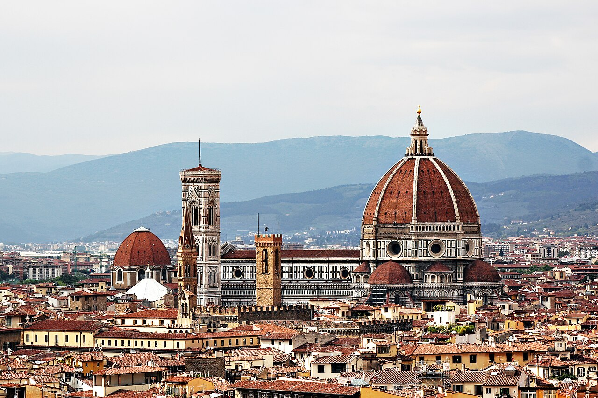
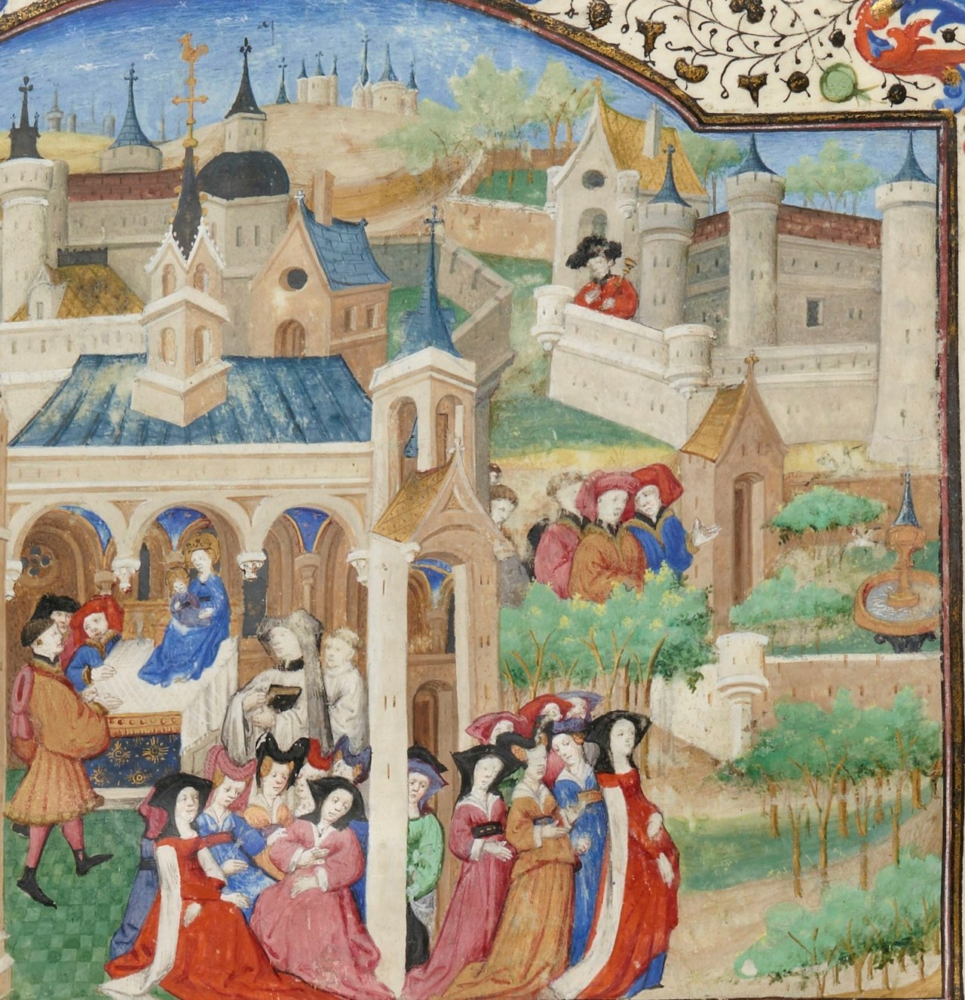
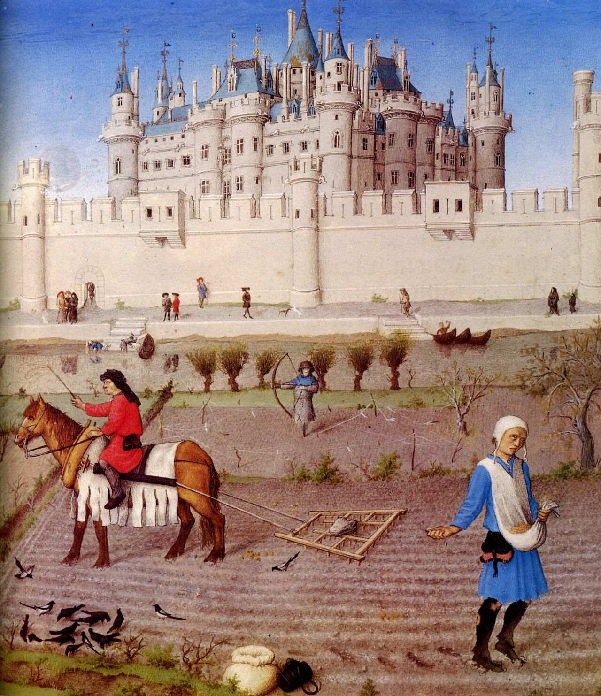
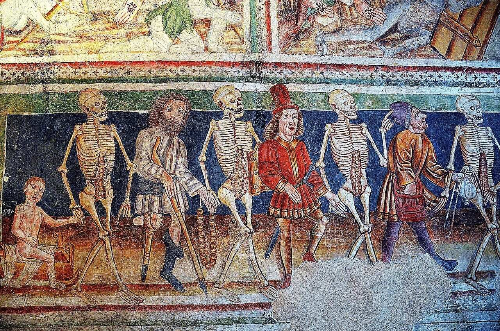
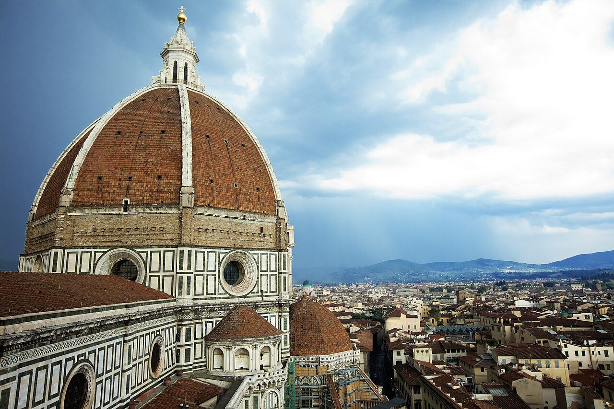
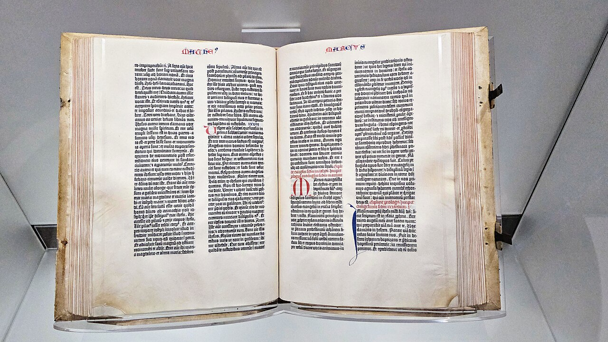
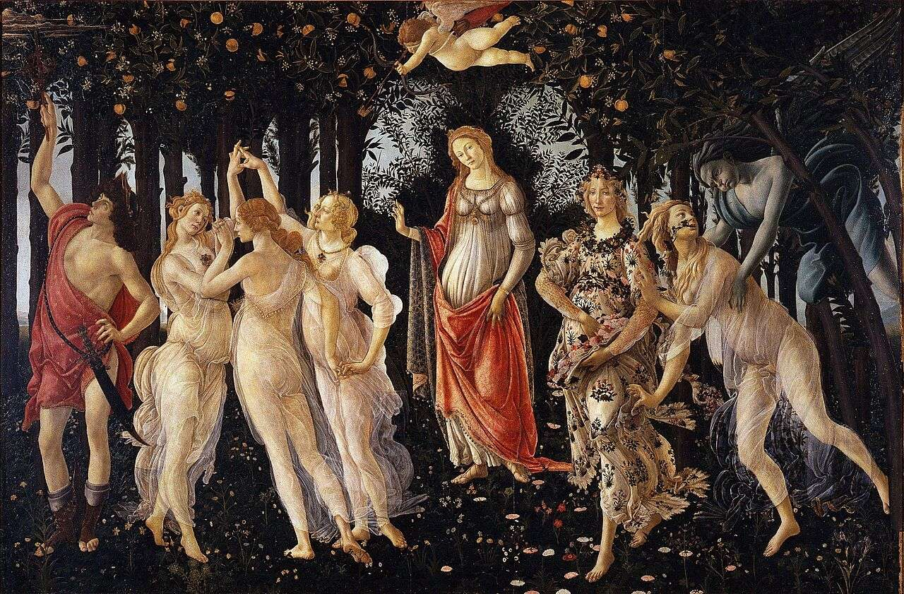

歴史・地理 History & Geographyペストのあと、 なぜ ルネサンスが 花開いた？ 1347年、黒海から来た船がシチリア島に病を運び、数年でヨーロッパの人の4分の1から半分ほどが亡くなったとされます。ところが100年もたたないうちに、フィレンツェには巨大な丸屋根が立ち、新しい芸術と学問が花開きます。どん底のあとに花が咲いたわけを、病の通った道の地図と年表でたどってみませんか。
2026.11.11 UP 約8分で読める 文：SOMOSOMO編集部
写真：フィレンツェの大聖堂／Jonathan Körner（2016年、CC0）
Previously
前回は、1206年にチンギス・ハンの称号を名のったテムジンのもとで、モンゴル帝国が部族を組み直し、敵の技まで取りこんで広がり、ジャムと呼ばれる駅の道で国をつないだ話でした。その時代の1346年、黒海の北の港町カッファを囲んだ陣にペストが広がり、翌年、病はジェノヴァの船で海を渡ります。
シチリア島の港町メッシーナ、1347年10月。カッファから逃れてきたジェノヴァのガレー船（こぎ手の多い細長い船）が着きました。乗っていた人々の多くは、すでに病に倒れていたと伝えられます。
船が運んできたのは、ペストでした。ネズミなどにつくノミにかまれて、ペスト菌という細菌がうつる病気です。病はシチリア島からイタリア半島へ広がりました。1353年ごろまでの数年で、ヨーロッパの人の4分の1から半分ほどが亡くなったとされます（6割とみる研究者もいます）。
ところが100年もたたないうちに、イタリアのフィレンツェには空に浮かぶような丸屋根が完成し、古代ギリシャやローマを手本にする画家や学者が次々に現れました。のちにルネサンス（「再生」という意味）と呼ばれる動きです。人がこれほど減ったあとに、なぜ文化が花開いたのでしょうか 。
In a word
ペストが生んだのではなく、人が減って増えた富 が、前からあった芽 に注がれたから。
01
The Ships
ペストは、 商いの船に 乗ってきた
病のもとをたどると、ずっと東に行き着きます。2022年の研究では、いまのキルギスにあるイシク・クル湖の近くで、1338〜39年の墓から、この大流行のもとになった菌が見つかりました。ただ、そこからどの道をたどって黒海まで来たのかは、研究者の間でも意見が分かれています。
カッファはジェノヴァの商人の港で、病は町の中にも移ったとされます。
ジェノヴァの商人たちは船で逃げ、1347年の夏にコンスタンティノープルへ、10月にはシチリア島へ病を運びます。翌1348年1月には、ジェノヴァやヴェネツィアにも船が着きました。北イタリアへの入り口になったのは、その数週間後に病が出た港町ピサです。
Fig.01 ペストが イタリアへ 着くまで
黒海
地中海
シチリア島
カッファ
コンスタンティノープル
メッシーナ
ピサ
フィレンツェ
ジェノヴァ
ヴェネツィア
パリ
マインツ
ストラスブール
この話のおもな舞台
ペストが通った港
そのほかの町
ペストを運んだ船の道（1347〜48年、おおよそ）
見どころは、カッファからピサまで、病がジェノヴァの商人の船の道をたどったこと。道はおおよそです。地図は Natural Earth（パブリックドメイン）から作りました。
1348年、病はフィレンツェにも入ります。町の人口は、1338年の11万〜12万人から、1351年には5万人まで減ったという推計があります。被害はヨーロッパだけではありません。エジプトのカイロでも、8か月のうちに住民の3分の1以上が亡くなりました。
このころフィレンツェにいた作家ボッカッチョは、1348〜53年ごろに『デカメロン』を書きました。病の町を逃れ、郊外の屋敷に移った若い女性7人と男性3人が、10日のあいだに100の物語を語り合う、という作りです。
物語には、教会や聖職者をからかう話が多く出てきます。死の影の中で書かれたのは、この世を生きる人間たちの、笑いと恋の話でした。

フィレンツェを発つ語り手たち 15世紀の『デカメロン』の写本の絵の一部です。手前に女性たちが集まり、左の建物の中にも人々がいます。この絵には「フィレンツェを発つ語り手たち」という題が付けられています。写真：Decameron - BNF Ms 239 - Départ des conteurs du Decameron de Florence （部分）／作者不明（15世紀、パブリックドメイン。フランス国立図書館蔵）
02
Fewer Hands
人が減ると、 生き残った人の 取り分が 増えた
当時のヨーロッパでは、人の多くが畑で働く農民でした。その中には農奴と呼ばれる人も多く、領主（土地の持ち主）の土地にしばられて、領主の畑で働いたり、収穫の一部を納めたりしていました。
ペストのあと、畑を耕す人も、町の職人も足りなくなります。働き手は、より高い賃金を出すところへ移るようになりました。領主は農民を引き止めるため、畑で働く代わりにお金で土地の借り賃（地代）を納めればよい、という条件を出します。
土地の値打ちは下がり、食べ物も安くなりました。亡くなった親族から、家や土地を受け継いだ人も少なくありません。同じ畑と町を、前より少ない人数で分け合うことになりました 。

種をまく農民 15世紀前半（1412〜16年と1440年ごろ）の祈りの本『ベリー公のいとも豪華なる時祷書』の10月の絵です。右の男性が種をまき、左では馬に農具を引かせて土をならしています。ペストから60〜90年ほどのちの、フランスの畑の姿です。写真：Les Très Riches Heures du duc de Berry octobre detail ／ランブール兄弟ほか（1412〜16年・1440年ごろ、パブリックドメイン）
土地を持つ側は、これを押しとどめようとしました。イングランドでは1349年と1351年に法が作られ、賃金をペストの前の1346年より上げることも、働き手が勝手に移ることも禁じます。けれども、この法は多くの土地であまり守られませんでした。
ただ、どこでも同じだったわけではありません。イングランドの町で賃金だけで暮らす人の中には、物の値段が上がって、かえって苦しくなった人もいました。東ヨーロッパでは逆に、農民を土地にしばる決まりが前より厳しくなります。
Fig.02 人が減ると、 富は どこへ回ったか
1347– 人が大きく減る ヨーロッパの人の4分の1から半分ほどが亡くなる LABOR 働き手が足りない 畑を耕す人も、町の職人も足りなくなる WAGES 賃金が上がり、土地は安くなる 領主は人を引き止めるため、条件を良くする WEALTH 生き残った人に富が回る 親族の家や土地を受け継ぐ人も多い
見どころは、同じ土地と仕事を、前より少ない人数で分けることになった流れ。ただし西ヨーロッパの話で、東では農民がかえって土地にしばられました。図は本文の内容をまとめたものです。
03
Shaken Faith
祈っても 止まらない病が、 教会を ゆさぶった
第15話で見たように、中世のヨーロッパでは、教会が人々の暮らしの中心にありました。ところが、どれだけ祈っても病は止まりません。聖職者が足りなくなり、そのあとを急いで継いだのは、経験の浅い人たちでした。
恐れは、身近な人への暴力にもなりました。ユダヤ人が井戸に毒を入れたといううそが広まり、各地で襲われます。1349年2月14日、いまのフランス東部のストラスブールでは、約2,000人が焼き殺されました。町にはまだ病が届いていませんでした。教皇はユダヤ人を守るよう命じましたが、暴力は止まりませんでした。
死を見つめる絵も生まれます。身分の高い人も低い人も、骸骨に手を引かれて踊る「死の舞踏」です。絵として記録に残る最も古いものとされるのは、1424〜25年にパリの墓地の壁に描かれた絵で、いまは残っていません。

骸骨と並んで歩く人々 いまのスロベニアの村フラストヴリェにある、聖三位一体教会の「死の舞踏」の壁画です（1490年）。子どもも、杖をついた老人も、着飾った若者も、骸骨と同じ列に並んでいます。写真：Hrastovlje - Mrtvaški ples - freska ／カスタヴのヤネス（1490年、パブリックドメイン）
こうした経験が芸術をどう変えたのかは、歴史家の間でも見方が分かれます。死を身近に見たことで、あの世よりもこの世の人生に目が向いた、という説があります。反対に、信仰の心が強まって、宗教画をたのむ人が増えた、という説もあります。
04
Money and the Dome
芽は前からあり、 銀行の富が 丸屋根を のせた
実は、ルネサンスの芽は、ペストより前に出ていました。詩人ペトラルカは1345年、北イタリアのヴェローナの大聖堂の図書室で、古代ローマの政治家キケロの、それまで知られていなかった手紙の束を見つけます。この発見が、古代に学ぶ動きの始まりとよくいわれます。
では、なぜフィレンツェで大きく花開いたのでしょう。鍵の1つがお金です。1340年代、フィレンツェの二大銀行だったバルディ家とペルッツィ家が、イングランド王の借金の踏み倒しなどで倒れました。その空いた席に、のちに入ったのがメディチ家です。
1397年にジョヴァンニ・ディ・ビッチが開いたメディチ銀行は、ローマの教皇庁のお金も預かり、ヨーロッパで最も大きな銀行になります。1434年からは、息子のコジモが、その富を使ってフィレンツェの政治を動かしました。
コジモは、芸術家や学者を支えるパトロン（後ろだて）でもありました。古代の写本をさがす人を各地へ送り、古代ギリシャの哲学者プラトンの全集を、初めてすべてラテン語に訳させています。
1367年、町は、外から支える壁を使わずに、古代風の大きな丸屋根をのせると決めます。中世のゴシック様式（高くとがった造り）と分かれる、ルネサンスの最初の出来事の1つとされる決定でした。
ただ、誰もそれを造る方法を知りません。1418年のコンペ（設計の案をきそう選考）で選ばれたのは、コジモの支えを受けた金細工師ブルネレスキでした。木の枠で下から支えずにレンガを積む方法を考え、400万個を超えるレンガで、1436年に丸屋根を仕上げます。

枠なしで積んだ丸屋根 フィレンツェの大聖堂の丸屋根です。赤いレンガの面を、白い石の筋が区切っています。高さは114.5mで、石やレンガを積んで造った丸屋根としては、いまも世界一の大きさです。写真：Cathedral of Santa Maria del Fiore, Firenze, Italy (Unsplash) ／Ilya Orehov（2016年、CC0）
05
Scholars and Print
東からの学者と 印刷機が、 流れを 強めた
学びも東から届きました。1396年、フィレンツェはコンスタンティノープルの学者クリュソロラスを招き、翌年からギリシャ語を教えてもらいます。弟子の1人は、北イタリアでギリシャ語を学んだ人は700年いなかった、と書き残しました。
1453年5月29日、そのコンスタンティノープルが、オスマン帝国（いまのトルコのもとになった国）に落とされます。
ギリシャの学者たちは、古い写本を持ってイタリアへ移りました。学者ベッサリオンは1468年、ギリシャ語の写本482冊を含む蔵書をヴェネツィアに贈っています。ルネサンスはその前から始まっていましたが、学者たちの移住は、古代を学び直す流れをさらに強めたと見られています。
同じころ、ドイツのマインツでは、グーテンベルクが金属の活字で刷る印刷機を動かし始めていました。1455年には、約180部の聖書を刷り上げます。第16話で見た、宋の畢昇（ひっしょう）の粘土の活字から、400年ほどのちのことでした。1500年までに刷られた本は2,000万部を超えます。

グーテンベルクの聖書 アメリカ議会図書館に展示されている1冊です。1ページに2段、それぞれ42行の文字が並ぶことから、「42行聖書」とも呼ばれます。写真：Gutenberg Bible on display at the U.S. Library of Congress ／MC BSU（2024年、CC0）
15世紀の後半には、フィレンツェで学んだ画家たちが活躍しました。1452年に近くのヴィンチ村で生まれたレオナルド・ダ・ヴィンチは、フィレンツェの工房で修業します。ボッティチェッリは、古代の神話の神々を大きな板に描きました。

古代の神々を描いた『春』 ボッティチェッリが1470年代の終わりか80年代のはじめに描いた絵です。中ほどに女神ウェヌス（ヴィーナス）、左に手を取り合って踊る三美神。古代の神話の人々をこれほど大きく描いた絵は、古代のあと、ほとんど例がありませんでした。写真：Primavera ／サンドロ・ボッティチェッリ（1480年ごろ、パブリックドメイン。ウフィツィ美術館蔵）
Fig.03 ルネサンスの芽と 花の年表 （1340〜1500年）
1350
1400
1450
1500
1345 ペトラルカが、キケロの手紙を見つける1347〜53 ペストの大流行
1378 フィレンツェで毛織物の職人が反乱1397 メディチ銀行が始まるギリシャ語の授業も始まる
1436 大聖堂の丸屋根が完成1453 コンスタンティノープルが落ちる1455 グーテンベルクの聖書ができる1480ごろ ボッティチェッリの『春』
見どころは、最初の芽（1345年）がペストより前にあり、花にあたる出来事はペストのあとに集まっていること。赤い帯が最初の大流行です。点の位置は年数に比例します。
こうして並べると、ペストがルネサンスを生んだ、とは言い切れません。芽はその前からあり、メディチ家の銀行も、ギリシャの学者も、印刷機も、それぞれ別の流れから来ています。
ただ、人が減ったことで、生き残った人の手には富が回りました。死を身近に見た経験が、絵の題材を変えたという見方もあります。そしてフィレンツェには、その町の富を古代に学ぶ芸術や学問へ注ぐ銀行家と、それに応える職人や学者がいました。どん底のあとの富と、前からあった芽が、この町で重なったのです 。
06
By the Numbers
数字で見る ペストのあと
2倍 1350年から1450年までに、イングランドの農場で働く人の賃金が、平均で上がった倍率Consequences of the Black Death（Wikipedia）による
3〜4割 1350年から1400年までに、ヨーロッパの多くの地方で土地の値打ちが下がった割合Renaissance（Wikipedia）による
60万枚超 コジモ・デ・メディチが生涯に芸術と文化に使ったフローリン金貨Cosimo de' Medici・Medici Bank（Wikipedia）による
Here's the Fun Part
ここが面白い！ルネサンスのあいだ、 ペストは 去っていなかった
ここまで「ペストのあと」と書いてきましたが、ペストは1353年ごろにいったんおさまったあとも、くり返しヨーロッパに戻ってきました。イングランドでは1360〜63年の流行で、ロンドンの人の2割が亡くなっています。
ある研究者の数えでは、1400年から1600年までの200年で、ヨーロッパのどこにもペストの流行が記録されていないのは、1445年のたった1年だけでした。丸屋根が仕上がった1436年も、レオナルドが生まれた1452年も、どこかの町でペストが流行っていたことになります。
歴史家の中には、くり返す流行が人の数を少ないまま保ち、働く人の暮らしを良くした、と見る人もいます。フィレンツェの人口も、ペストの前の大きさに戻ったのは19世紀になってからでした。ルネサンスは、ペストのあとというより、ペストとともに花開いたことになります 。
次に美術館や画集でルネサンスの絵を見かけたら、その絵が描かれた年にも、ヨーロッパのどこかでペストが流行っていたことを思い出してみてください。
To be continued
フィレンツェの丸屋根ができて間もない1438年ごろ、大西洋の向こうのアンデスの山々でも、ある国が急に広がり始めます。都クスコから南アメリカの西側をまとめ、コロンブスが来る前のアメリカ大陸で最大の帝国になったインカです。約1,000万人を治めたこの国は、なぜわずかなスペイン人に滅ぼされたのでしょうか。
出典・参考
Black Death （Wikipedia 英語版）：ペスト菌とノミ、2022年のイシク・クル湖近くの墓（1338〜39年）の研究、シルクロードを通ったかどうかに異論があること、カッファの包囲（ジャニー・ベクのキプチャク・ハン国の軍。記事は1346年とし、Black Death は1345〜46年とする）、カッファがジェノヴァの交易の港だったこと、1347年夏のコンスタンティノープル、1347年10月にジェノヴァのガレー船12隻でシチリア島に着いたこと、1348年1月のジェノヴァ・ヴェネツィアと数週間後のピサ、ヨーロッパの人の25〜60%（推計の幅）、カイロで8か月に3分の1〜40%、フィレンツェの人口（1338年の11万〜12万人から1351年の5万人）、賃金の上昇と働き手の移動、金銭の地代への切りかえ、町で賃金だけで暮らす人の実質の収入の低下、ペストとルネサンスの関係をめぐる説、ラグーサの検疫Messina （Wikipedia 英語版）：1347年、カッファから来たジェノヴァのガレー船がメッシーナの港にペストを運び、乗っていた人の多くが死んでいるか死にかけていたという同時代の記録Second plague pandemic （Wikipedia 英語版）：1353年ののちもくり返し流行したこと、1360〜63年にロンドンの人の20%が亡くなったこと、1400〜1600年で流行が記録されなかったのは1445年だけというエレン・シファールの数えThe Decameron （Wikipedia 英語版）：1348〜53年ごろに書かれたこと、フィレンツェを逃れて郊外の屋敷に移った女性7人と男性3人、10日で100の物語、教会や聖職者を笑いの種にしたことConsequences of the Black Death （Wikipedia 英語版）：働き手の不足と賃金の上昇、1349年の労働者勅令と1351年の労働者規制法（1346年の賃金を上限とし、働き手の移動も制限）、法がよく守られなかったことと、1350〜1450年にイングランドの農場の賃金が平均2倍になったこと（数字の欄）、東ヨーロッパで農奴制が強まったこと、司祭の不足と経験の浅い後継ぎ、くり返す流行が働く人の暮らしを良くしたというウォルター・シャイデルの見方Florence ・Italian Renaissance （Wikipedia 英語版）：1345年にイングランド王エドワード3世が借金の返済を拒み、バルディ家とペルッツィ家の銀行が倒れてメディチ家が伸びる道が開いたこと、1453年ののちギリシャの学者が移ってきたことPersecution of Jews during the Black Death （Wikipedia 英語版）：井戸に毒を入れたといううその告発、1349年2月14日のストラスブールで約2,000人が焼き殺され、町にはまだ病が届いていなかったこと、クレメンス6世の1348年7月6日と9月26日の勅書Danse Macabre ・Hrastovlje （Wikipedia 英語版）：死の舞踏が身分を問わず死が訪れることを描いたこと、記録に残る最古のものがパリの聖イノサン墓地の1424〜25年の壁画（現存せず）であること、フラストヴリェの聖三位一体教会の壁画が1490年、カスタヴのヤネスの作であることRenaissance （Wikipedia 英語版）：「再生」という言葉、ルネサンスがなぜイタリアで始まったかに議論があること、死が身近になってこの世に目が向いたという説と、信仰が強まって宗教画の注文が増えたという説、1350〜1400年に土地の値打ちが30〜40%下がったこと（数字の欄）、生き残った人が親族の財産を受け継いだこと、1396年のクリュソロラスの招きPetrarch （Wikipedia 英語版）：1345年、ヴェローナの大聖堂の図書室でキケロの知られていなかった手紙の集まりを見つけたこと、これがルネサンスの始まりとされることが多いことMedici Bank ・Cosimo de' Medici （Wikipedia 英語版）：1397年にジョヴァンニ・ディ・ビッチが開いたこと、最盛期にヨーロッパで最大の銀行だったこと、ローマ支店が教皇庁の預金を扱い、1434年からのコジモ、芸術と文化に60万フローリン超を使ったこと（数字の欄）、写本をさがす人を送ったこと、フィチーノにプラトン全集をラテン語に訳させたことFlorence Cathedral ・Filippo Brunelleschi （Wikipedia 英語版）：1367年の丸屋根の決定がルネサンスの最初の出来事の1つとされること、1418年のコンペとコジモが支えたブルネレスキ、木の仮枠なしで造った丸屋根、400万個を超えるレンガ、1420〜36年の工事、高さ114.5m、石積みの丸屋根として今も最大であること、ブルネレスキが金細工師だったことManuel Chrysoloras ・Bessarion ・Fall of Constantinople （Wikipedia 英語版）：1397年の冬にフィレンツェに着き1400年までギリシャ語を教えたこと、弟子ブルーニの「700年」の言葉、1453年5月29日の陥落、学者の移住がルネサンスの人文主義を強めたと多くの研究者が見ていること、ベッサリオンが1468年にギリシャ語の写本482冊を含む蔵書をヴェネツィアに贈ったことJohannes Gutenberg ・Printing press （Wikipedia 英語版）：マインツの印刷機が1450年までに動いていたこと、1455年の42行聖書と約180部、11世紀の畢昇の粘土の活字、1500年までに刷られた本が2,000万部を超えたことLeonardo da Vinci ・Primavera (Botticelli) （Wikipedia 英語版）：1452年にヴィンチの近くで生まれ、フィレンツェのヴェロッキオのもとで学んだこと、『春』が1470年代の終わりか1480年代のはじめの作で、古代の神話を大きく描いた例が古代のあとほとんどなかったことInca Empire （Wikipedia 英語版）：1438〜1533年に広がったこと、都クスコ、アメリカ大陸で最大の帝国、約1,000万人（次の話へ）地図（Fig.01）：Natural Earth （パブリックドメイン）の海岸線から作成。船の道はおおよそ
写真：CC0 またはパブリックドメイン。扉はフィレンツェの大聖堂と町並み（Florence, Italy (Unsplash pRU-VnBVJMQ) ／Jonathan Körner、2016年、CC0）。本文中の写真のクレジットは、それぞれの写真の下に記しています